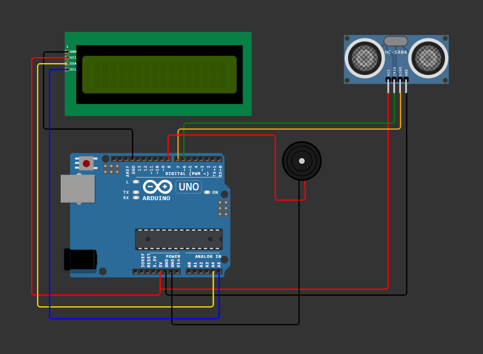

A real-world flood detection system that measures water levels using an ultrasonic sensor, displays readings on an I2C LCD, and triggers a buzzer alert when flooding is detected.
Simulated water-level preview. The gauge animates and switches to an alert state when level is high — matching exactly what your Arduino and sensor will report.
This project uses an ultrasonic sensor to measure water levels, displays them on an LCD, and triggers a buzzer alert when flooding is detected. It's a practical safety tool designed with clarity and user-friendly alerts.
Full production-ready sketch. Copy, paste into your Arduino IDE, and upload.
#include <Wire.h>
#include <LiquidCrystal_I2C.h>
LiquidCrystal_I2C lcd(0x27, 16, 2); // I2C LCD address and size
const int trigPin = 9; // Trig → D9
const int echoPin = 10; // Echo → D10
const int buzzerPin = 8; // Buzzer → D8
const int maxDepth = 100; // distance from sensor to bottom
const int floodThreshold = 10; // ALERT if distance <= 10 cm
int prevWaterLevel = -1;
byte upArrow[8] = { 0b00100,0b01110,0b10101,0b00100,0b00100,0b00100,0b00100,0b00000 };
byte downArrow[8] = { 0b00100,0b00100,0b00100,0b00100,0b10101,0b01110,0b00100,0b00000 };
byte equalSign[8] = { 0b00000,0b11111,0b00000,0b11111,0b00000,0b00000,0b00000,0b00000 };
void setup() {
pinMode(trigPin, OUTPUT);
pinMode(echoPin, INPUT);
pinMode(buzzerPin, OUTPUT);
lcd.init();
lcd.backlight();
lcd.createChar(0, upArrow);
lcd.createChar(1, downArrow);
lcd.createChar(2, equalSign);
lcd.setCursor(0,0);
lcd.print("Flood Detector");
delay(2000);
lcd.clear();
}
long getDistance() {
long sum = 0;
for (int i = 0; i < 5; i++) {
digitalWrite(trigPin, LOW);
delayMicroseconds(2);
digitalWrite(trigPin, HIGH);
delayMicroseconds(10);
digitalWrite(trigPin, LOW);
long duration = pulseIn(echoPin, HIGH, 20000);
long distance = duration * 0.034 / 2;
sum += distance;
delay(10);
}
return sum / 5;
}
void loop() {
long distance = getDistance();
int waterLevel = maxDepth - distance;
lcd.setCursor(0,0); lcd.print("Water Level: ");
lcd.setCursor(0,1); lcd.print(" ");
if (distance <= 30) {
lcd.setCursor(0,0); lcd.print("Water Level:");
lcd.setCursor(0,1); lcd.print(waterLevel); lcd.print(" cm ");
if (distance <= floodThreshold) lcd.print("ALERT ");
if (prevWaterLevel != -1) {
if (waterLevel > prevWaterLevel) lcd.write(byte(0));
else if (waterLevel < prevWaterLevel) lcd.write(byte(1));
else lcd.write(byte(2));
}
}
if (distance <= floodThreshold) {
tone(buzzerPin, 1000); delay(200);
noTone(buzzerPin); delay(200);
} else {
noTone(buzzerPin); delay(1000);
}
prevWaterLevel = waterLevel;
}
A breakdown of how every part of the sketch works.
waterLevel = maxDepth - distancefloodThresholdgetDistance() from 5 to 100x3F as the I2C address instead of 0x27Libraries required and where to get them.
Wire your components exactly as shown below.
The actual flood detector circuit setup.

Recognised for outstanding innovation and engineering excellence.
Download the Arduino sketch and wiring image for offline use.
Everything that makes this flood detector smart and reliable.
{kind=link}